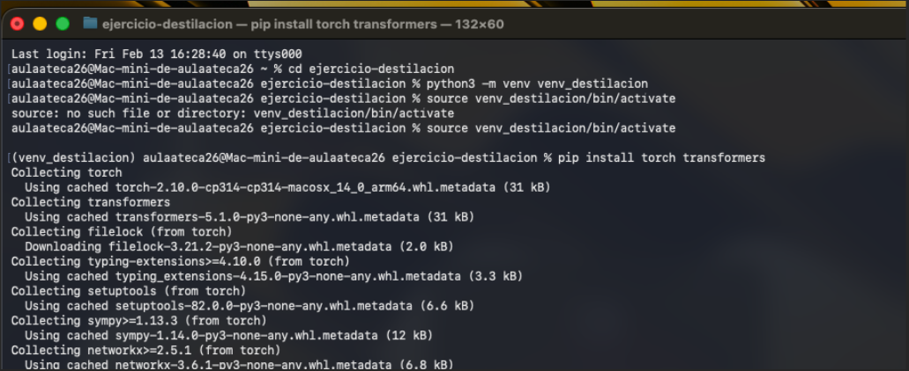
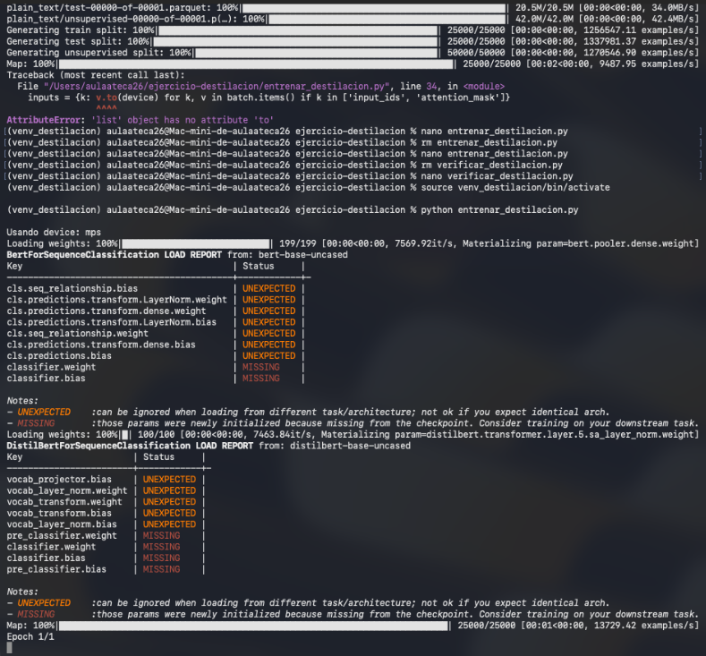
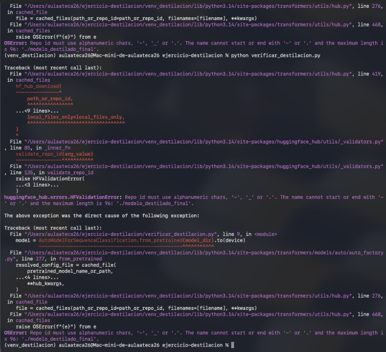
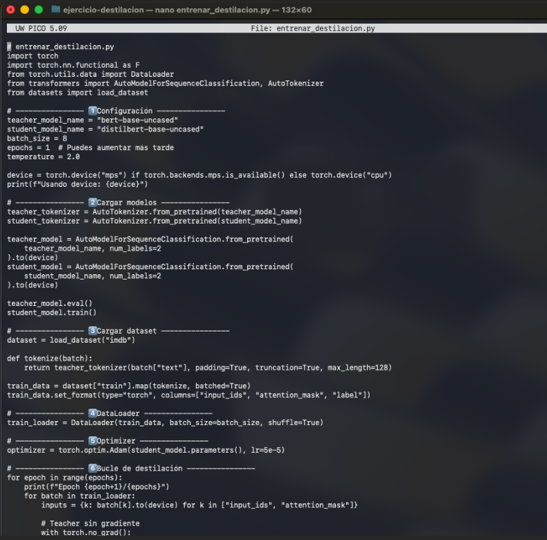
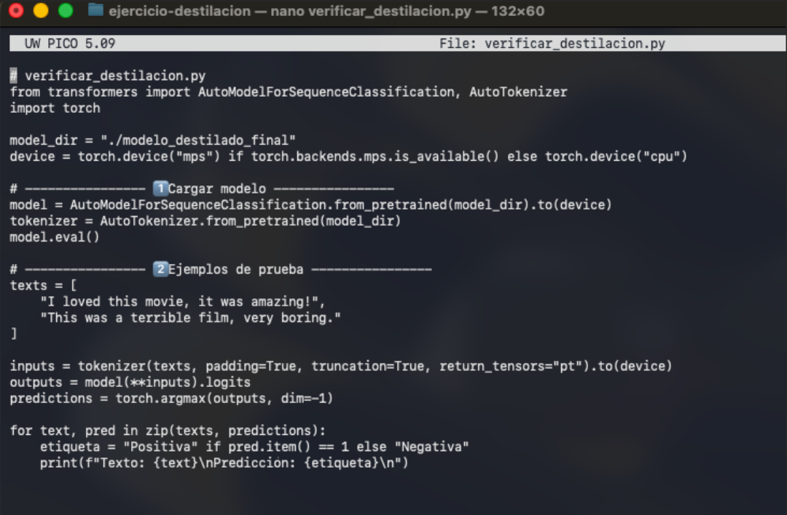

1. Introducción
En este trabajo se documenta el proceso seguido para realizar un ejercicio educativo de destilación de conocimiento aplicado a modelos de lenguaje. La destilación es un proceso de entrenamiento en el que un modelo grande (profesor) transfiere su comportamiento a un modelo más pequeño (estudiante), buscando que este último sea mucho más eficiente manteniendo gran parte de la “inteligencia” del primero.
La guía principal utilizada ha sido el documento «Curso IA. Destilación», donde se explica que la destilación “es un proceso de entrenamiento para transferir el ‘conocimiento oscuro’ de un modelo grande a uno pequeño” y que el estudiante “aprenda a ‘imitar el razonamiento’ del profesor”.
2. Resumen teórico de la destilación
Según la guía, la destilación de conocimiento en LLMs consiste en entrenar un modelo estudiante usando no solo las etiquetas “duras” (correctas), sino también las salidas probabilísticas del modelo profesor (etiquetas “blandas” o soft labels). Esto permite capturar matices y relaciones entre clases que el profesor ha aprendido durante su entrenamiento.
- Modelo profesor: modelo grande y potente, costoso de ejecutar.
- Modelo estudiante: modelo más pequeño y rápido, con arquitectura similar.
- Conocimiento oscuro: distribución de probabilidades sobre las clases, no solo la clase ganadora.
La guía también destaca beneficios como la reducción de costes de inferencia, la posibilidad de desplegar modelos en dispositivos con recursos limitados y la retención de capacidades complejas en un modelo más compacto.
3. Preparación del entorno de trabajo
El primer paso fue crear un entorno de trabajo en macOS para aislar las dependencias del
proyecto y poder instalar las librerías necesarias: torch y transformers.
3.1. Creación del entorno virtual
cd ejercicio-destilacion
python3 -m venv venv_destilacion
source venv_destilacion/bin/activate
pip install torch transformers
Aquí va la captura de la creación del entorno y la instalación de torch y transformers.
4. Scripts creados durante el proceso
4.1. Script de entrenamiento y destilación
A partir de la guía, se decidió implementar un enfoque más manual (sin usar
Trainer de Hugging Face) para entender mejor el bucle de destilación. Se creó el
archivo entrenar_destilacion.py, donde se cargan el modelo profesor y el estudiante,
el dataset IMDB y se define el bucle de entrenamiento con destilación.
import torch
import torch.nn.functional as F
from torch.utils.data import DataLoader
from transformers import AutoModelForSequenceClassification, AutoTokenizer
from datasets import load_dataset
# 1. Configuración
teacher_model_name = "bert-base-uncased"
student_model_name = "distilbert-base-uncased"
batch_size = 8
epochs = 1 # Se puede aumentar más tarde
temperature = 2.0
device = torch.device("mps") if torch.backends.mps.is_available() else torch.device("cpu")
print(f"Usando device: {device}")
# 2. Cargar modelos y tokenizadores
teacher_tokenizer = AutoTokenizer.from_pretrained(teacher_model_name)
student_tokenizer = AutoTokenizer.from_pretrained(student_model_name)
teacher_model = AutoModelForSequenceClassification.from_pretrained(
teacher_model_name, num_labels=2
).to(device)
student_model = AutoModelForSequenceClassification.from_pretrained(
student_model_name, num_labels=2
).to(device)
teacher_model.eval()
student_model.train()
# 3. Cargar dataset IMDB
dataset = load_dataset("imdb")
def tokenize(batch):
return teacher_tokenizer(batch["text"], padding=True, truncation=True, max_length=128)
train_data = dataset["train"].map(tokenize, batched=True)
train_data.set_format(type="torch", columns=["input_ids", "attention_mask", "label"])
# 4. DataLoader
train_loader = DataLoader(train_data, batch_size=batch_size, shuffle=True)
# 5. Optimizador
optimizer = torch.optim.Adam(student_model.parameters(), lr=5e-5)
# 6. Bucle de destilación (esquema general)
for epoch in range(epochs):
print(f"Epoch {epoch+1}/{epochs}")
for batch in train_loader:
inputs = {
"input_ids": batch["input_ids"].to(device),
"attention_mask": batch["attention_mask"].to(device),
}
labels = batch["label"].to(device)
# Forward del profesor (sin gradiente)
with torch.no_grad():
teacher_outputs = teacher_model(**inputs)
teacher_logits = teacher_outputs.logits
# Forward del estudiante
student_outputs = student_model(**inputs, labels=labels)
student_logits = student_outputs.logits
student_loss = student_outputs.loss
# Pérdida de destilación (KL Divergence)
loss_distillation = F.kl_div(
input=F.log_softmax(student_logits / temperature, dim=-1),
target=F.softmax(teacher_logits / temperature, dim=-1),
reduction="batchmean",
) * (temperature ** 2)
# Combinación de pérdidas
loss = 0.2 * student_loss + 0.8 * loss_distillation
optimizer.zero_grad()
loss.backward()
optimizer.step()
# Aquí se podrían imprimir logs de pérdida periódicamente
# (Opcional) Guardar el modelo estudiante destilado
# student_model.save_pretrained("modelo_destilado_final")
# student_tokenizer.save_pretrained("modelo_destilado_final")
Aquí va la captura de la ejecución del script de destilación y los mensajes de carga de modelos.
Durante el desarrollo se encontró un error típico al construir el diccionario de
inputs, debido a que algunos elementos del batch eran listas en lugar de tensores
(error 'list' object has no attribute 'to'). Esto se corrigió filtrando y usando solo
las claves que realmente son tensores (input_ids y attention_mask).
4.2. Script de verificación del modelo destilado
Siguiendo la idea de la guía, se creó un segundo script, verificar_destilacion.py,
pensado para cargar el modelo destilado desde un directorio local y probarlo con
frases de ejemplo (una positiva y una negativa).
from transformers import AutoModelForSequenceClassification, AutoTokenizer
import torch
model_dir = "./modelo_destilado_final"
device = torch.device("mps") if torch.backends.mps.is_available() else torch.device("cpu")
# 1. Cargar modelo
model = AutoModelForSequenceClassification.from_pretrained(model_dir).to(device)
tokenizer = AutoTokenizer.from_pretrained(model_dir)
model.eval()
# 2. Ejemplos de prueba
texts = [
"I loved this movie, it was amazing!",
"This was a terrible film, very boring."
]
inputs = tokenizer(texts, padding=True, truncation=True, return_tensors="pt").to(device)
outputs = model(**inputs).logits
predictions = torch.argmax(outputs, dim=-1)
for text, pred in zip(texts, predictions):
etiqueta = "Positiva" if pred.item() == 1 else "Negativa"
print(f"Texto: {text}\nPredicción: {etiqueta}\n")
Aquí va la captura del intento de verificación y el error sobre el repo id/ruta del modelo.
Como el modelo destilado no llegó a guardarse correctamente (la destilación no se completó),
la verificación falló con un error relacionado con el identificador del repositorio/ruta
(Repo id must use alphanumeric chars...) al intentar cargar
./modelo_destilado_final.
5. Problemas encontrados y limitaciones
- Tiempo de entrenamiento: la destilación completa requiere tiempo de cómputo; por impaciencia y falta de tiempo no se completó el proceso.
- Errores de tipos en el DataLoader: se produjo un error al intentar usar
.to(device)sobre listas; fue necesario ajustar el tratamiento del batch. - Guardado y carga del modelo: al no ejecutar la parte de guardado del modelo estudiante, el directorio
modelo_destilado_finalno existía o no estaba bien formado, provocando errores al verificar.
Archivos utilizados:
entrenar_destilacion.py

verificar_destilacion.py

6. Conclusiones y posibles mejoras
Aunque la destilación no se completó, el trabajo permitió:
- Comprender la teoría básica de la destilación de conocimiento y el papel del profesor y el estudiante.
- Configurar un entorno de trabajo con
torch,transformersydatasets. - Implementar un bucle de destilación con combinación de pérdida supervisada y pérdida de destilación (KL Divergence con temperatura).
- Detectar y depurar errores relacionados con tipos de datos, rutas de modelos y carga desde Hugging Face.
Como trabajo futuro, se podría:
- Completar varias épocas de entrenamiento hasta obtener un modelo estudiante razonablemente bueno.
- Guardar correctamente el modelo destilado y repetir la verificación con frases de prueba.
- Medir de forma cuantitativa la reducción de parámetros y la mejora en velocidad frente al modelo profesor.